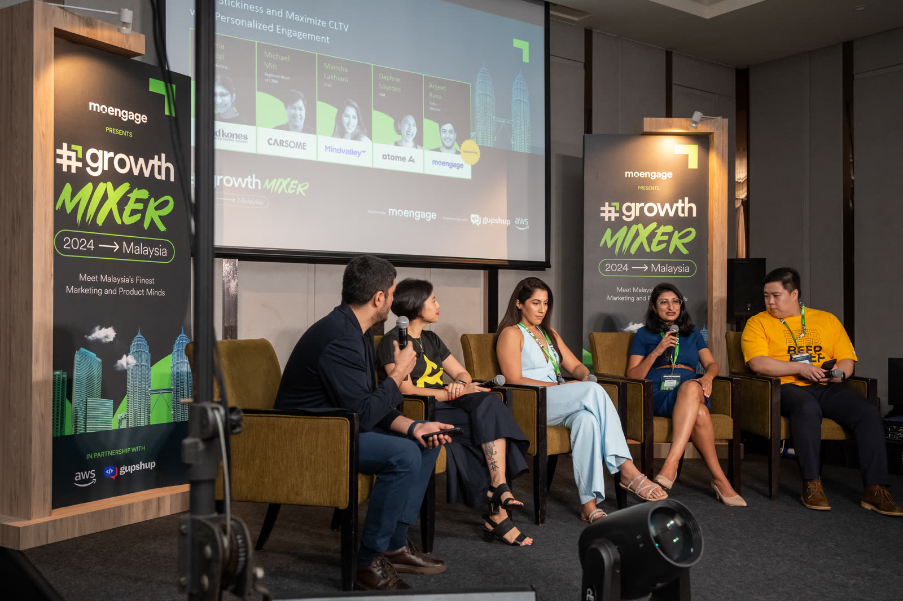

A video sales letter (VSL) funnel has very few steps: an ad, a page with one sales video, and a checkout or application. Because it is so short, every step carries a lot of weight. If one part is weak, there is nothing else to save the sale.
I see the same five parts in every VSL funnel that works. I also see the same five places where they lose money.
01The ad makes one clear promise
The ad's only job is to get the right person to click. The mistake is writing an ad that gets cheap clicks from the wrong people. You pay less per click and more per sale.
Check: does the first line of your page repeat the promise the ad made? If the page changes the subject, people leave in the first few seconds.
02The page gets out of the way
A VSL page needs a headline, the video and one button. Menus, extra links and long text above the video all give people somewhere else to go.
Speed matters here more than anywhere. On the funnels I audit, a page that takes four seconds or more to load loses around 40% of visitors before they see the headline.
03The video sells the result, not the contents
Most VSLs list what is inside: the modules, the calls, the bonuses. Buyers don't want the contents. They want to know who they will be afterwards.
A simple order that works: the problem in their words, why the usual fixes fail, what you do differently, proof, the offer, and what happens if they do nothing.

04The price comes after the value
If people see the price before they understand what they get, most stop listening. Show everything they get, and what it is worth to them, before the number appears. This single change is often the biggest lift in a VSL.
Real example
In a webinar audit I published as a sample, the price came first and the features were remembered afterwards. The fix put the guarantee first, the offer as outcomes, then the price, so the number landed small. The report expected sales on the offer to rise 1.5 to 2 times. A VSL works the same way: same offer, same price, different order.
On the funnels I audit, a page that takes four seconds or more to load loses around 40% of visitors before they see the headline.
05The follow-up catches everyone who didn't buy
Most people who watch won't buy that day. In webinar funnels I audit, about 70% of buyers need three to seven days to decide, and VSL buyers are no different. If you have their email, write to them. If you don't, run ads to the people who watched most of the video.
My guide to the 7-day follow-up sequence works for a VSL with small changes.
Real example
A fitness app I took apart in my newsletter ran thousands of short video ads. Its best one was a 73-second clip that looked like a podcast, and it ran nine versions of that winner before trying a new idea. That part is textbook: one person, one problem, one promise.
Then the video stops. Inside the funnel there is no video at all, and the decision lands on a plain price card. People who leave without buying get no follow-up. The ad does the hard work, and the funnel lets it go at the two moments that matter most: the price and the follow-up.
Where VSL funnels leak most
- People leave in the first 30 seconds. The opening doesn't match the ad.
- People watch but don't click. The offer is unclear or the price arrives too early.
- People click but don't pay. The checkout asks for too much. See why checkouts lose buyers.
- Nobody is followed up. There is no email or ad sequence after the video.
Next, read how to work out a good VSL conversion rate for your own funnel. Or take the 10-Leak Scorecard to see which of the ten most common leaks you have.